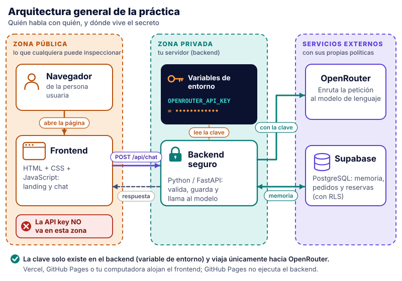
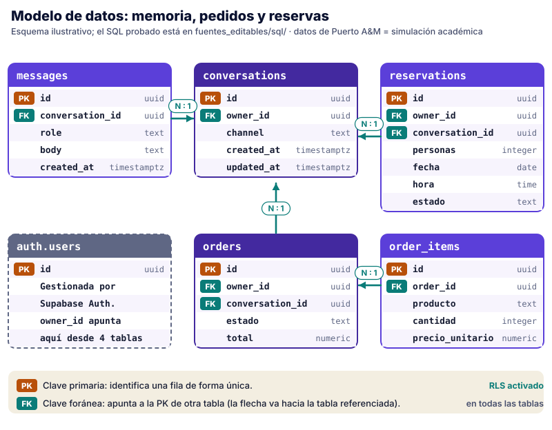
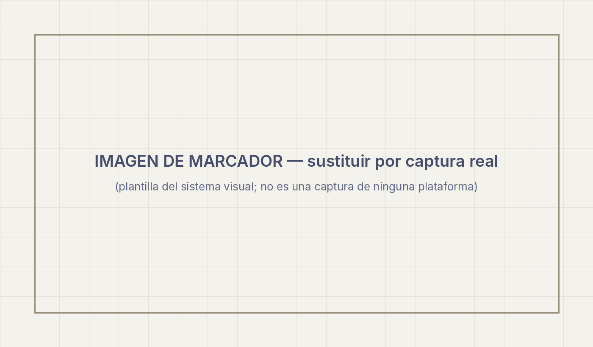
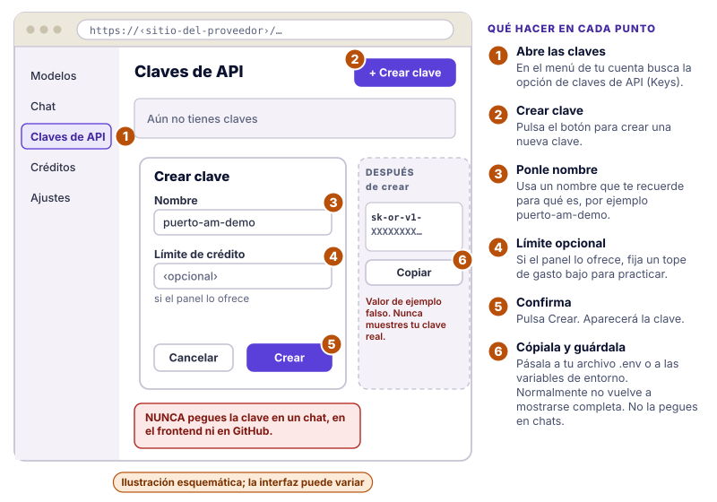

Guía de muestra · Sistema visual
Plantilla con todos los componentes editoriales: pasos, prompts para copiar, terminal, errores, tablas, esquemas y evaluación.
Antes de empezar
Cada bloque de esta guía tiene una función precisa. Aprende a reconocerlos en dos minutos y podrás retomar la clase en el punto exacto donde te perdiste.
Cada fragmento lleva una etiqueta que dice de dónde viene. Nunca dependen solo del color: siempre incluyen texto.
| Etiqueta | Qué significa |
|---|---|
| Ocurrió realmente durante la sesión del 22/11/2026. | |
| Prompt recuperado del chat y mejorado después de la clase. | |
| Material adicional del profesor; no es documentación oficial de la plataforma. | |
| Dato tomado de documentación oficial reciente, con URL y fecha de verificación. | |
| Dato o resultado de práctica ficticia (Simulación académica). | |
| No se pudo comprobar; verifícalo antes de depender de ello. | |
| Precisión técnica añadida después de la clase, con fuente primaria. | |
| Reconstruido para enseñar mejor; no sucedió literalmente así en vivo. |
Parte 1 · Concepto
Antes de escribir un solo prompt necesitas un mapa mental: quién habla con quién y dónde vive cada secreto.
En clase se construyó la landing del restaurante ficticio Puerto A&M. Se veía bien, pero el chat del asistente no contestaba al publicarla. La causa no estaba en el diseño: faltaba un backend, es decir, un programa en un servidor que guarda la clave y llama al modelo de lenguaje por ti.
Un frontend es lo que ve y toca la persona en su navegador. Un backend es el programa que corre en otro lugar y hace el trabajo sensible. Un endpoint es la dirección concreta del backend a la que el frontend le pide algo, por ejemplo /api/chat.

Todo lo que viaja al navegador puede leerse: basta abrir las herramientas del desarrollador. Por eso la regla es sencilla y sin excepciones.
/api/chat.OPENROUTER_API_KEY de su entorno.script.js..env subido a GitHub.Abre la carpeta del proyecto
En el Explorador de archivos entra a la carpeta puerto-am que creaste en la práctica anterior.
una carpeta con index.html, styles.css y script.js.
Abre PowerShell en esa carpeta
Haz clic derecho en un espacio vacío con Shift presionada y elige Abrir ventana de PowerShell aquí.
Comprueba que Python responde
Escribe el comando de abajo y pulsa Enter.
PS C:\Users\alumno\puerto-am> python --version Python 3.12.x
un número de versión de Python 3.
Crea y activa un entorno virtual
Aísla las librerías de este proyecto para no mezclarlas con otras.
PS> python -m venv .venv PS> .\.venv\Scripts\Activate.ps1 (.venv) PS>
Crea el archivo de variables de entorno
Crea .env con el nombre de la variable y el valor vacío. Lo llenarás después, solo en tu computadora.
# Solo en tu equipo. Nunca se sube a GitHub (ver .gitignore).
OPENROUTER_API_KEY=
Protege el archivo con .gitignore
Añade una línea para que Git ignore .env.
.env .venv/ __pycache__/
que git status no liste .env.
Versión mejorada del prompt de clase: ahora declara rol, restricciones de seguridad y criterio de aceptación.
Actúa como desarrollador backend senior que enseña a principiantes.
Estoy en Windows con PowerShell. El proyecto ya tiene index.html,
styles.css y script.js (landing del restaurante ficticio Puerto A&M).
OBJETIVO
Crear un backend FastAPI con un único endpoint POST /api/chat que reciba
{"message": "..."} y devuelva {"reply": "..."} usando OpenRouter.
REGLAS DE SEGURIDAD (no negociables)
1. La API key se lee de la variable de entorno OPENROUTER_API_KEY.
2. Nunca escribas la clave en el código, en ejemplos ni en logs.
3. Si la variable no existe, responde HTTP 500 con un mensaje claro.
4. Limita el mensaje del usuario a 500 caracteres.
ENTREGABLES
- main.py con comentarios en español.
- requirements.txt.
- Instrucciones para ejecutarlo en PowerShell y probarlo con curl.
CRITERIO DE ACEPTACIÓN
Al ejecutar uvicorn, abrir /docs y probar el endpoint debe devolver
un texto de respuesta. Explica cada archivo en una frase.
Copia todo el bloque, incluida la primera línea. No agregues tu API key: el prompt nunca la necesita.
Prueba
Abre http://127.0.0.1:8000/docs y ejecuta Try it out con el mensaje “Hola”.
Resultado esperado
Respuesta con código 200 y un campo reply con texto.
TypeError: Failed to fetch al enviar un mensaje.http://127.0.0.1:8000/docs en otra pestaña. Si no carga, el backend está apagado.uvicorn main:app --reload y repite la prueba. Si carga pero el chat falla, pídele a tu asistente que revise la configuración CORS.401 Unauthorized desde el proveedor.OPENROUTER_API_KEY está vacía, mal copiada o fue revocada.PS> if ($env:OPENROUTER_API_KEY) { "definida" } else { "vacía" }
.env y reinicia el servidor.| Lugar | Qué sirve | ¿Ejecuta Python? | ¿Protege claves? |
|---|---|---|---|
| Tu computadora (localhost) | Todo, solo para ti | Sí | Solo en tu equipo |
| GitHub Pages | Archivos estáticos | No | No |
| Vercel | Estáticos y funciones | Según configuración | Variables de entorno |
Parte 2 · Datos y memoria
Un dashboard enseña números; un asistente con memoria recuerda la conversación. Ambos dependen de datos bien estructurados.
Las cifras siguientes pertenecen al ejercicio ficticio de Puerto A&M; no representan un negocio real.

def ultimos_mensajes(cliente, sesion_id: str, n: int = 6): # Siempre filtra por la sesión del usuario ANTES de llamar al modelo. respuesta = ( cliente.table("messages") .select("role, content") .eq("conversation_id", sesion_id) .order("created_at", desc=True) .limit(n) .execute() ) return list(reversed(respuesta.data))
Líneas de código de máximo 90 caracteres para que no se corten al imprimir.
Qué es y por qué cambia la forma de construir software.
Primer tablero con datos simulados de Puerto A&M.
Página del restaurante y chat simulado.
Primera llamada real a un modelo desde el backend.
Los minutos son aproximados.


ingreso ÷ pedidos únicos.Cada commit en una rama genera una URL de prueba.
La rama principal se publica en el dominio definitivo.
Solo existe en tu computadora mientras el servidor corre.
Cuidado con las cifras de la clase
Precios, límites y planes cambian. Cita la URL oficial y la fecha de verificación; no los trates como permanentes.
No desactives RLS para “que funcione”
La seguridad por filas (RLS) protege los datos de cada usuario. Si algo falla, corrige la política; no la apagues.
Atajo
Si te perdiste, ve directo a la página “Si te atoras, haz esto” al final de la guía.
Referencia rápida
/docs.Comprueba lo aprendido
¿Dónde debe guardarse la API key de OpenRouter?
¿Qué ejecuta GitHub Pages?
Una respuesta del asistente que dice “tu reserva está confirmada”, ¿garantiza que exista una reserva guardada?
¿Cuál es la acción correcta si expones una clave por accidente?
Referencia
/api/chat.Página de rescate
Respira. Casi siempre el problema es uno de cuatro. Sigue el orden: cada paso descarta una causa.
Abre /docs del backend. Si responde allí pero no desde la página, el problema es la conexión entre ambos (URL o CORS).
Comprueba que exista sin imprimirla. Si está vacía, créala otra vez y reinicia el servidor.
Autoría: Kevin Daniel Martínez Orozco — Profesor de Inteligencia Artificial Aplicada y Automatización. Grupo E1601.2 — Inteligencia Artificial, Top Learning.
Fechas: clase del 22/11/2026; verificación técnica del 23/11/2026.
Esta guía es material de apoyo educativo. Restaurante, menú, ventas, clientes y reservas de Puerto A&M son una simulación académica. Los precios, límites y pantallas de las plataformas cambian; consulta siempre la documentación oficial citada. Los esquemas ilustrativos están rotulados y pueden diferir de la interfaz real.
Las plataformas mencionadas pertenecen a sus respectivos titulares; no hay patrocinio ni respaldo de su parte. El material complementario del profesor no equivale a material oficial autorizado por Top Learning, salvo indicación expresa.